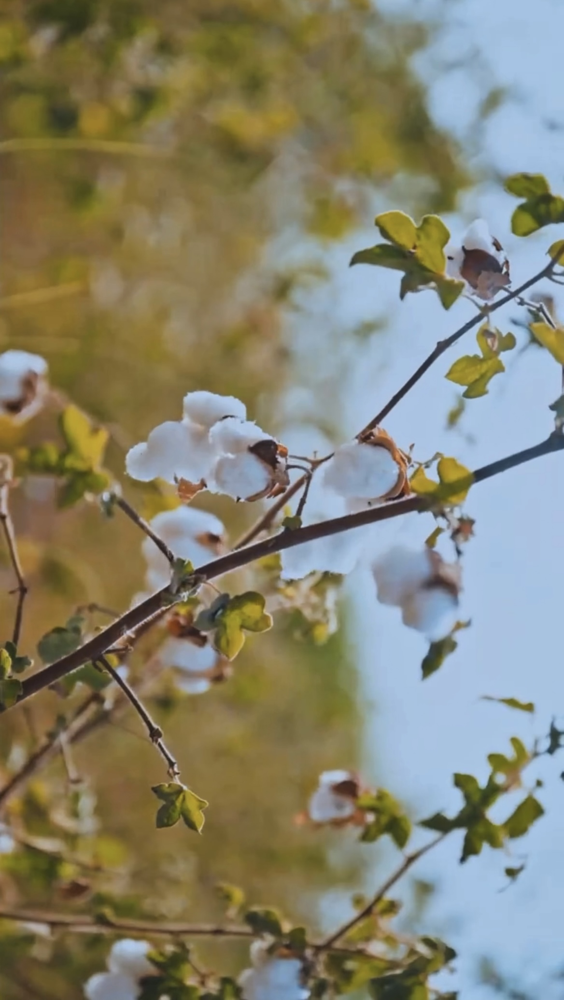

Every thread has a tale
Know YourFabric
Scan any QR code on a handloom product to discover the artisan behind it, the region it came from, and its journey to your hands.
Featured Crafts
Explore India's
Handloom Heritage

Kala Cotton
Kutch, Gujarat
Natural Fibre
🧶
Paruthee Handloom
Tamil Nadu
Pure Cotton
🪶
Indhikoj Block Print
Rajasthan
Block Print
🧣
Nabhaindia Saree
Karnataka
Gajendragad
How It Works
Three Simple Steps
1
Scan the QR Code
Use your phone camera on any participating handloom product to reveal its story.
2
Meet the Artisan
Learn who crafted your fabric, where they're from, and how long it took to weave.
3
Feel the Effort
Try our weaving simulator to truly understand the skill behind every thread.